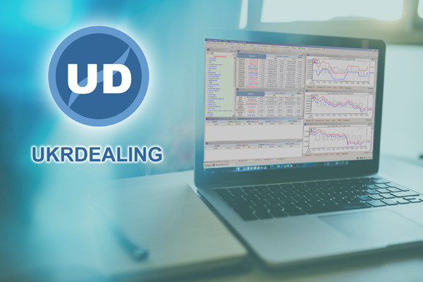

О компании
Имея почти 20-летний опыт работы на рынке информационных услуг, компания Укрдилинг разработала специализированное программное обеспечение для банковского сектора, которое является уникальным продуктом, сочетающим в себе невысокую стоимость пользования, обширную информационную и клиентскую базу, а также низкие системные требования к оборудованию. Информационно-дилинговая система UkrDealing представляет собой платформу, которая позволяет работать со следующими финансовыми инструментами: работая с которыми Вы сможете: Доступ к серверу позволит сотрудникам вашей банковской организации получать в режиме ONLINE информацию о состоянии Межбанковского рынка Украины. Для сотрудников Казначейства или Валютного отдела будут интересны котировки FOREX по основным парам валют, для депозитного и кредитного отделов – ставки DEPO и SWAP украинского межбанковского рынка, а для сотрудников отделов неторговых операций - CASH раздел нашей системы. Также имеется возможность подключения финансовых компаний, которые имеют соответствующие лицензии для работы на финансовом рынке Украины (страховики, торговцы ценными бумагами, инкассаторы и т.д.). Предлагаем вам стать участником информационно-дилинговой системы UkrDealing. 
- котировки Forex, Depo, Swap и Cash украинского межбанковского рынка;
- котировки Forex по основным валютным парам на международных рынках;
- значения основных мировых фондовых индексов (Dow, Nasdaq, DAX, NYSE, Nikkey и т.д.);
- календарь событий межбанковского рынка;
- фиксинги ЕЦБ, НБУ, а также множество другой финансовой информации,
- добавлять/удалять заявки по основным инструментам, оформлять сделки (тикеты);
- экспортировать тикеты в 1С и другие системы для своих внутренних расчетов;
- работать с заявками на рынке наличных средств;
- размещать, просматривать и сохранять банковскую отчетность;
- работать с графиками по всем основным финансовым инструментам;
- оперативно общаться с контрагентами (приватно и в общем чате);
- получать новости ведущих информационных агентств Украины (Укринформ, ЛIГАБiзнесIнформ и др.)